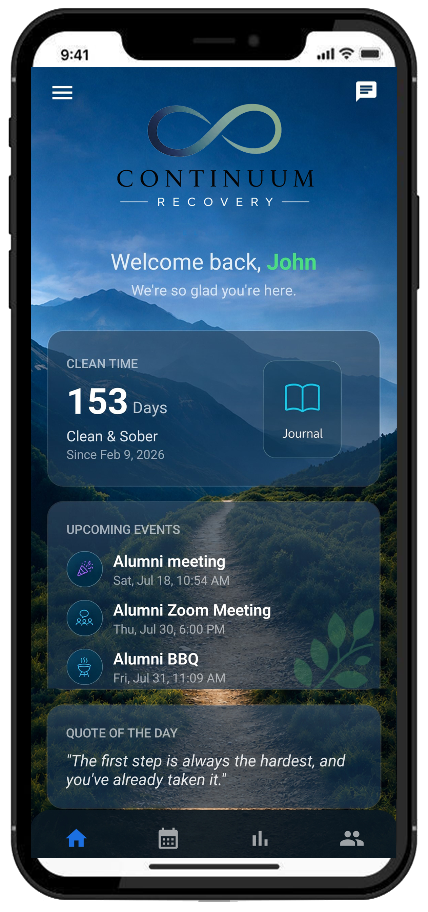
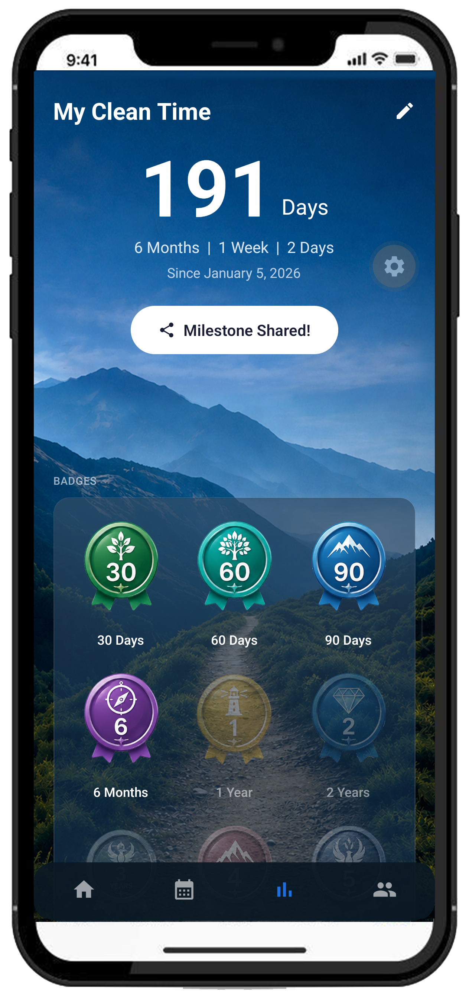
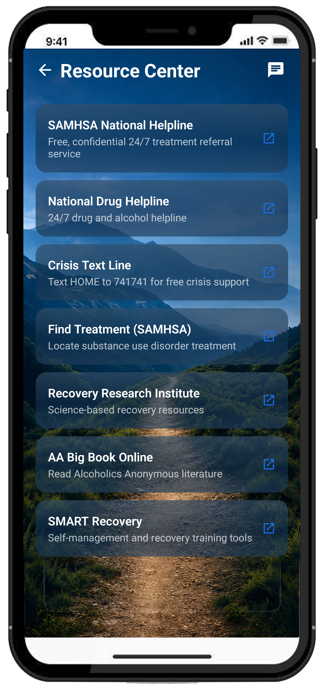

Wolfe Anchor
A private recovery support platform connecting members with their treatment facility and community.

A private recovery support platform connecting members with their treatment facility and community.
A private, distraction-free space designed around the daily habits that support recovery.

The home screen greets members by name and puts their progress front and center, so checking in only takes a glance.

A dedicated progress screen breaks clean time down into months, weeks, and days, and rewards consistency with collectible badges.

A curated resource center keeps national support lines and recovery literature accessible at any hour, for any member who needs them.
Wolfe Anchor is a private, invitation-only platform designed for members of partnered treatment and recovery facilities. Every feature is purpose-built to support the recovery journey — from day one through years of sobriety.
Facility administrators manage their own community, approve members, post announcements, and schedule events — all from the same app.
Wolfe Anchor is available exclusively through enrolled recovery facilities.
Tap "Request Access" in the app and fill out the membership form.
Your facility administrator reviews and approves your application.
You receive an email to set your password and get started.
Built specifically for recovery facility members and their support teams.
Track your days, months, and years of sobriety. Celebrate milestone badges at 30 days, 60 days, 90 days, 6 months, 1 year, and beyond.
Share your journey, celebrate milestones, and support fellow members in a private, facility-specific community feed.
Stay up to date with facility events, group meetings, and activities. Never miss an important gathering.
A private space to write daily reflections, track your thoughts, and even write letters to your future self.
Communicate directly with program staff and administrators whenever you need support or guidance.
Quick access to crisis hotlines, meeting finders, recovery resources, and facility announcements.